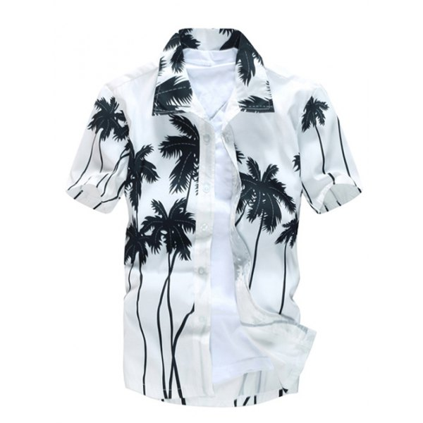
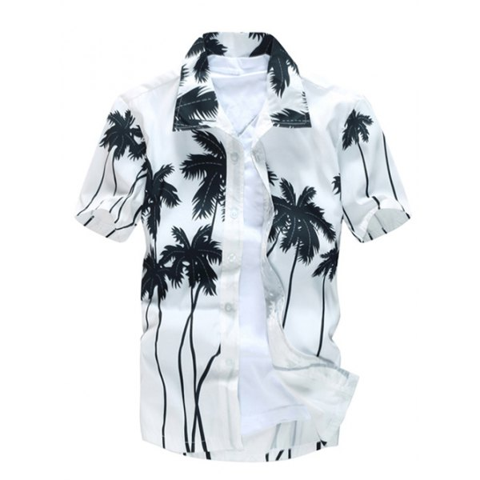
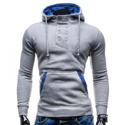
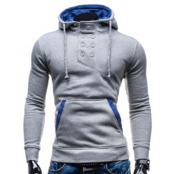
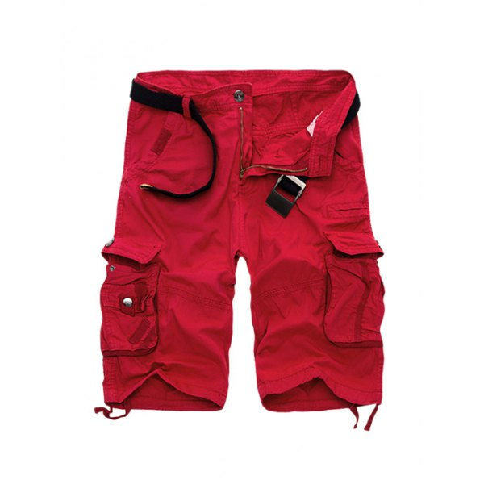
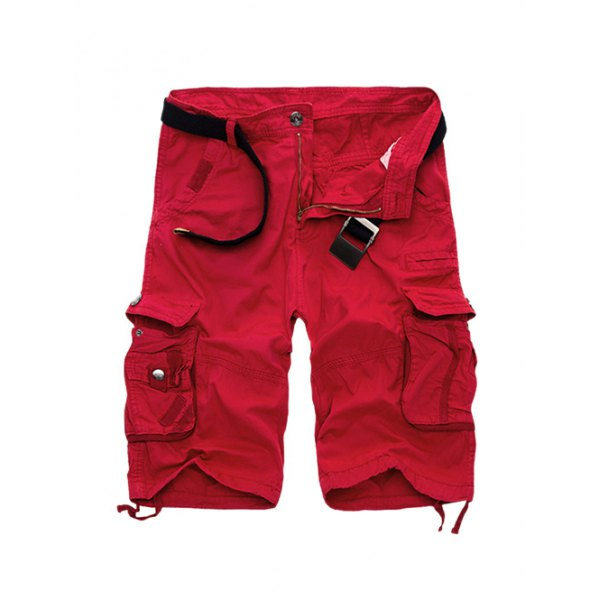
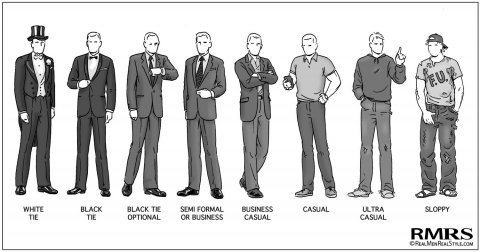

 



 


These days, when we hear the phrase “dress code” we’re most likely to associate it with workplace rules.
A lot of jobs still have written guidelines for employee attire, at varying degrees of strictness.

Much rarer are dress codes for social events.
These written requests for attendee attire are usually only one or two words long, meant to be printed on an invitation and understood by all the potential guests.
Unfortunately, universal understanding of social dress codes is going the way of cursive handwriting: it has an old-fashioned appeal to some people, but most of us don’t bother with it anymore.
So if you’ve been invited to an event with a dress code — or you’re planning an event and you want to request a specific sort of attire from your guests — look no further!
The wearing of clothing is mostly restricted to human beings and is a feature of nearly all human societies. The amount and type of clothing worn depends on body type, social, and geographic considerations. Some clothing can be gender-specific